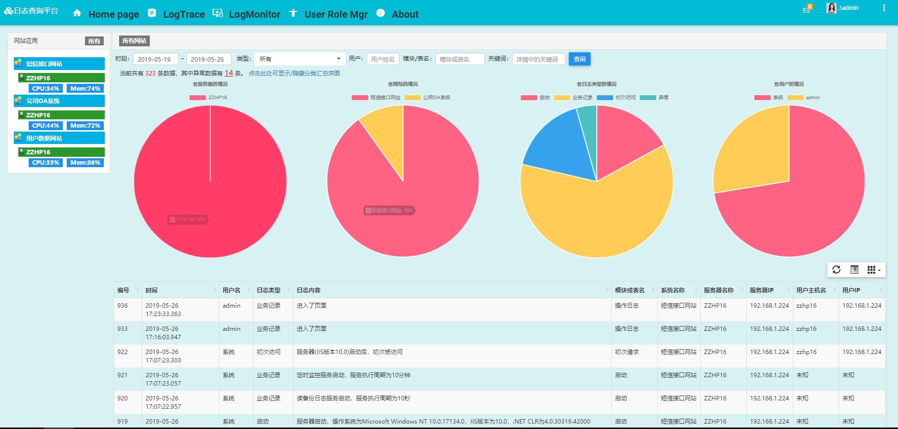

原文连接:https://www.cnblogs.com/yuchen1030/p/10992259.html
Log2Net是一个用于收集日志到数据库或文件的组件，支持.NET和.NetCore平台。 此组件自动收集系统的运行日志（服务器运行情况、在线人数等）、异常日志。程序员还可以添加自定义日志。 该组件支持.NET平台和.NETCore平台，支持将日志写入到文本文件、SQL Server、Oracle、MySQL，可以方便地扩展到其他数据库。
针对这个组件的数据，相应地有日志查询网站，它查询日志数据库的数据(Log2Net组件存储的日志数据），显示各服务器/网站的实时数据图表显示，提供操作轨迹数据和监控数据的查询功能，并对异常情况进行告警。
Log2Net系列目录
一、为什么要开发这个组件
也有有园友要问了，现在的日志组件太多了啊，什么log4net，ELK，Kafka，Grafana，Graylog、facebook scribe，apache chukwa，cloudera flume等。都是国际大厂或知名组织的开源组件，你又何必重复造轮子呢？
确实，这些开源系统不需要代码开发，且功能强大，支持各种类型（例如文本文本、数据库、缓存等）的日志的接入，有图表等多种展现方式，能实现海量数据的快速查询，能存储为多种类型（例如文本文本、数据库、缓存、HDFS等），天生的适合分布式部署。缺点是部署运维较为复杂，需要较多的插件支持（java、nodejs、ErLang等）；这些大都采用开源的java、scala等语言开发，优先应用于linux平台，我们不能灵活自由地定制自己的需求，相对我们.net平台来说，资料较少开发难度较大，相对我们的需求来说较为庞大。log4net组件虽然可以灵活地应用到.net系统中，但依然不满足我们的需求。
我们有众多的业务系统，为公司管理、运营、决策等提供详细详实可靠的信息支持，但这些系统中有些没有详实的日志记录，有些日志分散在各自的系统中，给运维人员、系统管理人员监控系统运行情况、追溯用户操作、查询业务变更等带来很大的不便，开发/运维人员在系统异常时也不能很好的明白异常的上下文信息，且不能保证开发/运维人员都能方便的登录生产服务器。
因此，我们需要一个集中式的日志收集系统，监控用户的操作情况和服务器运行情况，对日志中的关键字进行监控，触发异常时进行报警，协助开发人员查看相关日志 通过这个日志系统，我们能监控和分析系统的用户习惯和用户操作，能保障业务稳定运行，提高系统的健壮性和友好性。
日志采集分析是由需求驱动，根据某种场景的需要日志采集，采集的日志进行针对性的分析。一般常见的日志分析结果应用场景有：
a、系统审计：对于应用系统，采集操作日志、业务变更日志，有利于备查及提供相关安全审计功能。
b、系统分析：分析系统或者平台哪些功能是最受欢迎：什么时候使用最多用户使用，某个区域、某类用户使用最多。有利于功能推广；有利于提升服务器资源从而提高用户体验。
c、自动化运维和故障排查：场景微服务架构的系统或者平台，对运维投入的要求高，自动化部署和运维，可以减少运维的工作量和压力。系统运行环境日志采集、分析，可实现预警、服务器资源动态调配，有利于快速定位排查故障。
d、内容推荐：根据用户平常阅读内容，采集相关日志，并通过分析后，将用户感兴趣的内容系统自动推荐给用户，从而提升用户站粘性。
在我们的系统中，我们想知道用户进行了什么操作，想知道网站的运行情况（例如在线人数、异常情况等），想监控服务器的运行情况（如内存情况、磁盘使用情况等），目前没有一个合适的方案来较好地满足满足我们的需求。因此，我们开发了一个日志组件和一个集中式日志查询系统。这个日志组件可以自动地收集系统的运行情况（如服务器内存、磁盘使用、在线人数、日常日志等），可以记录用户操作情况等，可以通过日志查询界面显示各网站/服务器的实时数据图表显示，提供操作轨迹数据和监控数据的查询功能等。
二、Log2net组件使用效果展示
使用Log2net组件后，可以将日志数据以友好的形式展示：显示各服务器/网站的实时数据图表显示，提供操作轨迹数据和监控数据的查询功能，并对异常情况进行告警。
1 操作日志查询
操作日志查询主要用于按照系统名称、服务器名称、时段、日志类型、关键词等条件查询操作轨迹类数据，主要以列表数据的形式展示日志数据。在列表的左侧，可以显示服务器的概况，如cpu使用率，内存使用率等。在列表的上侧，显示日志的分类汇总情况。如下图所示：

2 系统监控
系统监控主要监控各服务器和应用网站的情况，主要以图形化的方面实时显示网站/服务器的运行情况。
(1)、概况实时显示：显示服务器在当前时刻的cpu/内存使用率等情况；
(2)、服务器状态监控：显示服务器在某时段内的cpu/内存使用率等情况；
(3)、系统流量监控：显示系统在某时段内的在线人数、某页面的访问人数等；
(4)、异常告警：在系统新加入监控或失去监控时音乐告警。
如下图所示：
上图中，每台服务器显示一条曲线图。因为本人测试的服务器只有一台，所以只有一个曲线图。随着服务器个数的增加，自动添加曲线图的个数。
系统代码参见 https://github.com/yuchen1030/Log2Net-LgWG.LogQuery 。
三、Log2net组件的使用方法
看了上面炫酷的效果，是不是有点心动了呢，那么怎么将其应用到自己的网站中呢？别急，跟我一步一步来。
PS. 本组件支持.NET4.5~.NetCore3.0，应该能满足绝大多数筒子们的需求了吧。若微软更新了.NetCore平台，稍后会添加对该平台的支持，尽量做到与.NetCore同步更新。
1 引用组件
在VS开发工具的nuget中，搜索 Log2Net 组件安装即可。
搜索搜索 Log2Net ，log4net出现在第一位，好吧，我承认，名字是参考他们的，也浏览了他们的代码~~
但是，小主，第二个才是我们要安装的，不要搞错了哦~~
你也可以通过Nuge官网来下载和安装： https://www.nuget.org/packages/Log2Net/ 。但建议使用VS工具的nuget来安装。
2 组件的注册
要使用该组件，需要进行组件的注册：在应用程序初始化的地方，调用 LogApi.RegisterLogInitMsg(SysCategory sys, object applicationObj = null, UserCfg userConfig = null, Dictionary<SysCategory, string> webAppName = null, bool bWriteStartLog = true, bool bLogMonitor = true)；
各参数解释如下：
SysCategory sys：业务系统的名称，在SysCategory枚举中定义好了。
object Application：程序的Application对象，用于网站在线人数和历史访客统计，仅在.net平台中使用。netCore中该参数为null；
UserCfg userConfig：用户在代码中进行的配置；若定义了此参数的值，则可以不使用Log2NetCfg.config配置文件；
Dictionary<SysCategory, string> webAppName：用户对网站名称的个性化定义；
bool bWriteStartLog：是否写网站启动的日志，默认为true；
bool bLogMonitor：是否写系统定时监控日志，默认为true。
一般地，在调用该方法时，只需要设置第一个参数，后面的参数可以不设置。
在.net平台中，是 Global.asax 中的Application_Start()事件中注册；
在.netCore平台中，是Startup.cs中 Configure中，appLifetime.ApplicationStarted.Register方法中注册。
该方法必须被调用，且必须在应用程序初始化事件中调用，否则调用其他写日志的方法时会出错。
此时，若您运行网站，则可以在网站的 App_Data/Log_Files 文件夹下看到txt格式的运行日志数据。若您需要将日志记录到数据库，则需要进行下述的日志配置。
3 日志组件的配置
本组件默认将日志数据记录到网站的 App_Data/Log_Files 文件夹下，格式为文本文件。若希望将日志数据记录到数据库，则需要进行配置。
1 基础配置


1 <baseCfg>
2
3 <!--日志级别：1、Off；2、Error；3、Warn； 4、Business ；5、DBRec； 6、Info；7、Debug （默认为7）-->
4 <add key="log2NetLevel" value="7" />
5
6 <!--日志记录方式：1、写到文件；2、直接写到数据库；3、通过队列写到数据库；4、消息队列写到数据库；默认为1-->
7 <add key="appenderType" value="2" />
8
9 <!--监控日志每隔多少分钟记录一次，若未设置默认为10分钟,若小于0则不监控-->
10 <add key="logMonitorIntervalMins" value="1"/>
11
12 <!--是否将info信息（仅供调试，不记录到日志的信息）记录到本地Debug文件：0不记录，1记录（默认为0）-->
13 <add key="bWriteInfoToDebugFile" value="1"/>
14
15 </baseCfg>2 文件方式配置
1 <fileCfg>
2 <!--写文件的路径（仅在日志记录方式为1时有效）-->
3 <add key = "logToFilePath" value="App_Data/Log_Files"/>
4
5 </fileCfg>3 数据库方式配置
1 <logDBCfg>
2 <!-- 访问数据库的方式：ADONET = 1, EF = 2, NH = 3 。默认为1-->
3 <add key="DBAccessTypeKey" value="1" />
4
5 <!--trace数据库的类型：SqlServer = 1, Oracle = 2, MySql = 3, Access = 4, PostgreSQL = 5, SQLite = 6。默认为1-->
6 <add key="UserCfg_TraceDBTypeKey" value="1" />
7 <!--monitor数据库的类型：SqlServer = 1, Oracle = 2, MySql = 3, Access = 4, PostgreSQL = 5, SQLite = 6。默认为1-->
8 <add key="UserCfg_MonitorDBTypeKey" value="1" />
9
10 <!--trace数据库的数据库连接字符串name值。默认为logTraceSqlStr-->
11 <add key="UserCfg_TraceDBConKey" value="logTraceSqlStr" />
12 <!--monitor数据库的数据库连接字符串name值。默认为logMonitorSqlStr-->
13 <add key="UserCfg_MonitorDBConKey" value="logMonitorSqlStr" />
14
15 <!--是否使用代码中的数据库连接字符串-->
16 <add key="ConnectStrIsInCode" value="0" />
17
18 </logDBCfg>4 oracle数据库特殊配置
1 <oracleCfg>
2 <!--是否使用EF初始化数据库Trace 表：0不使用，1使用，默认为0-->
3 <add key = "initTraceDBWhenOracle" value="0"/>
4
5 <!--是否使用EF初始化数据库 monitor 表：0不使用，1使用，默认为0-->
6 <add key = "initMonitorDBWhenOracle" value="0"/>
7
8 <!--Oracle数据库驱动方式：0 oracle驱动， 1 微软驱动，默认为0-->
9 <add key = "OracleDriverType" value="0"/>
10 </oracleCfg>5 消息队列配置
1 <MQCfg>
2 <!--消息队列服务器(地址、用户名、密码)-->
3 <add key="RabbitMQServer_Log" value="localhost:5672;oawxAdmin1;admin123.123"/>
4 </MQCfg>6 InfluxDB数据库方式配置
1 <InfluxDBCfg>
2
3 <!--是否需要写到InfluxDB数据库（默认为0）-->
4 <add key="bWriteToInfluxDB" value="0"/>
5
6 <!--Influxfu服务器的地址，用户名，密码-->
7 <add key="InfluxDBServer_Log" value="http://127.0.0.1:8086/;logAdmin;sa123.123"/>
8
9 </InfluxDBCfg>7 缓存配置
1 <cacheCfg>
2 <!--缓存策略：0、NET缓存；1、CacheManager中的NET系统缓存；2、Memcached缓存；3、Redis缓存；默认为0-->
3 <add key = "CacheStrategy" value="0"/>
4
5 <!--Memcache缓存服务器-->
6 <add key = "MemCacheServer" value="127.0.0.1:11211;127.0.0.2:11211"/>
7
8 <!--Redis缓存服务器-->
9 <add key = "RedisCacheServer" value="127.0.0.1:6379;127.0.0.2:6379"/>
10 </cacheCfg>8 用户业务系统名称定义
1 <userSystemNames>
2 <add key="SysA_01" value="短信接口网站" />
3 <add key="201" value="公司OA系统" />
4 <add key="901" value="用户数据网站" />
5 </userSystemNames>9 WebConfig总体配置
1 <configSections>
2 <!--Log2Net模块声明-->
3 <section name="log2netCfg" type="Log2Net.Config.Log2NetConfigurationSectionHandler, Log2Net" />
4 </configSections>
5
6 <log2netCfg configSource="Log2NetCfg.config" />
7 <appSettings>
8 <!--你自己代码中需要的配置-->
9
10 <!--Log2Net模块的section名称-->
11 <add key="log2netCfgSectionName" value="log2netCfg" />
12 <!--使用哪里的配置：File = 1,使用文件中的配置；Code = 2,使用代码中的配置；MixF = 3,混合使用，冲突时使用文件中的配置；MixC = 4,混合使用，冲突时使用代码中的配置-->
13 <add key="ConfigInWhere" value="4" />
14 </appSettings>10 日志数据库连接字符串配置
1 <connectionStrings>
2 <!--操作轨迹日志的数据库(Sql Server)-->
3 <add name="logTraceSqlStr" connectionString="data source=.;initial catalog=LogTraceW;user id=sa;password=sa123.123;multipleactiveresultsets=True;application name=EntityFramework" providerName="System.Data.SqlClient" />
4 <!--系统监控日志的数据库(Sql Server)-->
5 <add name="logMonitorSqlStr" connectionString="data source=.;initial catalog=LogMonitorW;user id=sa;password=sa123.123;MultipleActiveResultSets=True;application name=EntityFramework" providerName="System.Data.SqlClient" />
6
7 <!--操作轨迹日志的数据库(Oracle)-->
8 <add name="logTraceSqlStr2" connectionString="User Id=scott;Password=sa123123;Data Source=(DESCRIPTION=(ADDRESS=(PROTOCOL=tcp)(HOST=localhost)(PORT=1521))(CONNECT_DATA=(SERVICE_NAME=LogTraceW)))" providerName="Oracle.ManagedDataAccess.Client" />
9 <!--系统监控日志的数据库(Oracle)-->
10 <add name="logMonitorSqlStr2" connectionString="User Id=scott;Password=sa123123;Data Source=(DESCRIPTION=(ADDRESS=(PROTOCOL=tcp)(HOST=localhost)(PORT=1521))(CONNECT_DATA=(SERVICE_NAME=LogMonitorW)))" providerName="Oracle.ManagedDataAccess.Client" />
11
12 <!--操作轨迹日志的数据库(MySql)-->
13 <add name="logTraceSqlStr3" connectionString="Data Source=localhost;port=3306;Initial Catalog=LogTraceW;user id=sa;password=sa123123;" providerName="MySql.Data.MySqlClient" />
14 <!--系统监控日志的数据库(MySql)-->
15 <add name="logMonitorSqlStr3" connectionString="Data Source=localhost;port=3306;Initial Catalog=LogMonitorW;user id=sa;password=sa123123;" providerName="MySql.Data.MySqlClient" />
16 </connectionStrings>一般地，我们只需要在基础配置中配置 日志记录方式 appenderType 的值为 3 (通过队列写到数据库)，在数据库方式中配置访问数据库的方式和数据库类型，最后配置数据库连接字符串即可。若需要使用消息队列、缓存、InfluxDB等高级特性时，再进行相应配置即可。
上述1~8的配置，是在单独的文件中进行配置的。是在哪个文件中配置的呢？在配置9的log2netCfg configSource配置中指定，默认为Log2NetCfg.config文件。
在第9项配置中，声明了Log2Net模块，定义了配置文件文件名，定义了section name，定义了使用哪里的配置。该配置项中的section name 的值必须跟 Log2NetCfg.config 中的根节点保持一致。本组件中默认section name为 log2netCfg。
第10项配置是日志数据库的连接字符串配置，注意其name要跟第3项配置UserCfg_TraceDBConKey、 UserCfg_MonitorDBConKey中指定的名称一致。
例如，在web.config文件进行如下配置：
1 <configSections>
2 <!--Log2Net模块声明-->
3 <section name="log2netCfg" type="Log2Net.Config.Log2NetConfigurationSectionHandler, Log2Net" />
4 </configSections>
5
6 <log2netCfg configSource="Log2NetCfg.config" />
7
8 <appSettings>
9 <add key="UnobtrusiveJavaScriptEnabled" value="true" />
10 <!--Log2Net模块的section名称-->
11 <add key="log2netCfgSectionName" value="log2netCfg" />
12 <!--使用哪里的配置：File = 1,使用文件中的配置；Code = 2,使用代码中的配置；MixF = 3,混合使用，冲突时使用文件中的配置；MixC = 4,混合使用，冲突时使用代码中的配置-->
13 <add key="ConfigInWhere" value="4" />
14 </appSettings>
15
16 <connectionStrings>
17 <!--操作轨迹日志的数据库(Sql Server)-->
18 <add name="logTraceSqlStr" connectionString="data source=.;initial catalog=LogTraceW;user id=sa;password=sa123.123;multipleactiveresultsets=True;application name=EntityFramework" providerName="System.Data.SqlClient" />
19 <!--系统监控日志的数据库(Sql Server)-->
20 <add name="logMonitorSqlStr" connectionString="data source=.;initial catalog=LogMonitorW;user id=sa;password=sa123.123;MultipleActiveResultSets=True;application name=EntityFramework" providerName="System.Data.SqlClient" />
21
22 </connectionStrings>并在网站中添加 Log2NetCfg.config 文件，在该文件中添加1~8的配置。
以上配置项，值为数字，进行了简单的分组。事实上，您可以在值的位置填写名称。例如 <add key="log2NetLevel" value="debug" />。您可以随意分组，随意明明分组的名称。例如将 logDBCfg 分组命名为 log2netDBCfg，将 appenderType加入到该分组中，都是可以的，只要不改变配置项的名称，配置项名称不重复即可。
以上配置介绍，都是基于.net平台。那么，在.netCore平台中，又该如何配置呢？配置方法如下：
新建Log2NetCfg.json文件，内容如下：
1 {
2 "ConnectionStrings": {
3 "logTraceSqlStr": "Data Source =127.0.0.1;Initial Catalog = LogTraceW;uid=sa;pwd=sa123.123;",
4 "logMonitorSqlStr": "Data Source =127.0.0.1;Initial Catalog = LogMonitorW;uid=sa;pwd=sa123.123;",
5 "logTraceSqlStr2": "User Id=scott;Password=sa123123;Data Source=(DESCRIPTION=(ADDRESS=(PROTOCOL=tcp)(HOST=localhost)(PORT=1521))(CONNECT_DATA=(SERVICE_NAME=LogTraceW)))",
6 "logMonitorSqlStr2": "User Id=scott;Password=sa123123;Data Source=(DESCRIPTION=(ADDRESS=(PROTOCOL=tcp)(HOST=localhost)(PORT=1521))(CONNECT_DATA=(SERVICE_NAME=LogMonitorW)))",
7 "logTraceSqlStr3": "Data Source=localhost;port=3306;Initial Catalog=LogTraceW;user id=sa;password=sa123123;",
8 "logMonitorSqlStr3": "Data Source=localhost;port=3306;Initial Catalog=LogMonitorW;user id=sa;password=sa123123;"
9 },
10
11 "ConfigInWhere": 3,
12
13 "userSystemNames": {
14 "SysA_01": "短信接口网站",
15 "201": "公司OA系统",
16 "901": "用户数据网站",
17 "902": "my web"
18 },
19
20 "baseCfg": {
21 "log2NetLevel": "Info",
22 "appenderType": "2",
23 "logMonitorIntervalMins": "1",
24 "dncSessionTimeoutMins": "20",
25 "bWriteInfoToDebugFile": "0"
26 },
27
28 "fileCfg": {
29 "logToFilePath": "App_Data/Log_Files"
30 },
31
32
33 "logDBCfg": {
34 "DBAccessTypeKey": "2",
35 "UserCfg_TraceDBTypeKey": "1",
36 "UserCfg_MonitorDBTypeKey": "1",
37 "UserCfg_TraceDBConKey": "logTraceSqlStr",
38 "UserCfg_MonitorDBConKey": "logMonitorSqlStr",
39 "ConnectStrIsInCode": "0"
40 },
41
42 "oracleCfg": {
43 "initTraceDBWhenOracle": "0",
44 "initMonitorDBWhenOracle": "0",
45 "OracleDriverType": "0"
46 },
47
48 "MQCfg": {
49 "RabbitMQServer_Log": "localhost:5672;oawxAdmin1;admin123.123"
50 },
51
52 "InfluxDBCfg": {
53 "bWriteToInfluxDB": "0",
54 "InfluxDBServer_Log": "http://127.0.0.1:8086/;logAdmin;sa123.123"
55 },
56
57 "cacheCfg": {
58 "CacheStrategy": "0",
59 "MemCacheServer": "127.0.0.1:11211;127.0.0.2:11211",
60 "RedisCacheServer": "127.0.0.1:6379;127.0.0.2:6379"
61 }
62 }然后在启动代码中声明使用该配置文件：ConfigureAppConfiguration((context, config) =>{config.AddJsonFile("Log2NetCfg.json", false, true);}) 。
另外，对于系统的名字，系统中默认的名称为Sys字母_两位数字（SysA_01 ~ SysZ_99）。您可以通过配置将其映射为您想要的名称。例如
1 <userSystemNames>
2 <add key="SysA_01" value="短信接口网站" />
3 <add key="201" value="公司OA系统" />
4 <add key="901" value="用户数据网站" />
5 </userSystemNames>这个配置项在查询网站中很有用。该配置也是在 Log2NetCfg 文件中配置的。
看了这么多配置，也许你早不耐烦了，我的锅，但没办法，考虑到个性化，确实需要这么多配置。但一般地，我们只需要在基础配置中配置 日志记录方式 appenderType 的值为 (例如为3：通过队列写到数据库)，在数据库方式中配置访问数据库的方式和数据库类型，最后配置数据库连接字符串。其他的配置不予配置。不予配置的值将会采用系统默认配置。LgWG.LogQuery项目中就是这种配置方法。
若您确实需要进行个性化配置，您也可以采用在代码中进行配置：方法是在初始化方法LogApi.RegisterLogInitMsg中传入UserCfg userConfig参数的值，并设置ConfigInWhere的值为2即可。
4 .net平台日志记录方法
(1) 按照上述方法进行组件的注册、web.config文件和Log2NetCfg.config文件的配置；
(2) 网站生命周期事件的日志记录
|
日志记录的说明 |
使用位置 |
方法 |
|
网站全局错误日志 |
Application_Error事件 |
HandAndWriteException |
|
网站停止日志 |
Application_End事件 |
WriteServerStopLog |
|
在线人数和历史访客的增加 |
Session_Start事件 |
IncreaseOnlineVisitNum |
|
在线人数的减少 |
Session_End事件 |
ReduceOnlineNum |
|
网站启动后初次访问 |
Application_BeginRequest事件 |
WriteFirstVisitLog |
(3) 在需要进行日志记录的位置调用 LogApi.WriteLog ( LogLevel logLevel, params LogTraceEdm[] model) 或 LogApi.WriteLog ( LogLevel logLevel, params LogMonitorEdm[] model) 方法进行操作轨迹日志或监控日志的记录。你也可以将LogTraceEdm中除UserId、UserName之外的参数封装起来，UserId、UserName从你业务系统的基类中获取，简化LogApi.WriteLog的操作。
具体使用方法可参考 https://github.com/yuchen1030/Log2Net/tree/master/Log2NetWeb_net45 。
5 .netCore平台日志记录方法
(1) 按照上述方法进行组件的注册、Log2NetCfg.json文件的配置和声明；
(2) 相关服务配置
a、在Startup.cs的ConfigureServices方法中，调用LogApi.AddLog2netService(services, Configuration);
b、在 Startup.cs的Configure中，调用LogApi.AddLog2netConfigure(app, env);
(3) 在需要进行日志记录的位置调用 LogApi.WriteLog ( LogLevel logLevel, params LogTraceEdm[] model) 或 LogApi.WriteLog ( LogLevel logLevel, params LogMonitorEdm[] model) 方法进行操作轨迹日志或监控日志的记录。你也可以将LogTraceEdm中除UserId、UserName之外的参数封装起来，UserId、UserName从你业务系统的基类中获取，简化LogApi.WriteLog的操作。
具体使用方法可参考 https://github.com/yuchen1030/Log2Net/tree/master/Log2NetWeb_DNC 。
四、项目开源地址
本组件已开源，项目地址为 https://github.com/yuchen1030/Log2Net 。建议使用的VS工具为VS2017。当然，如果你只是使用该组件，随便你使用VS2012，VS2013,VS2015等工具。
查询网站亦开源，项目地址为 https://github.com/yuchen1030/Log2Net-LgWG.LogQuery 。该项目使用ABP+EF框架开发，建议使用VS工具为VS2017。
接下来，我会介绍该日志组件的架构和代码实现，敬请期待~~
Over，sleep.